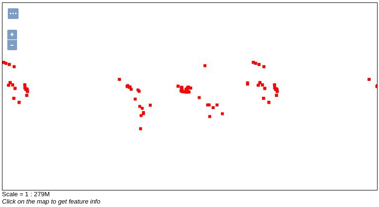

GeoServer
Objectifs de la session
Apprendre ce qu’est un serveur cartographique
Connaître les standards OGC WFS, WMS, WMTS…
Savoir importer, styliser et visualiser une couche de données dans GeoServer
Durée : 2h
Supports
️TP - Prise en main de GeoServer
Déploiement de GeoServer à l’aide de Docker
Documentation GeoServer - Dépôt de l’image Docker
Ce TP suppose que Docker est installé sur la machine. Il a été écrit pour une machine Linux, certains chemins et lignes de commande peuvent donc être différents sur une machine Windows ou Mac.
Si tout s’est bien passé lors du TP précédent, vous devriez avoir une instance de GeoServer qui tourne à l’adresse suivante : http://localhost:8080/geoserver/web/?0
Pour relancer votre instance, vous pouvez :
- ouvrir un terminal à la racine du dossier
geonum_dockeret taper la commandedocker compose up -d - ouvrir l’application Docker Desktop, trouver la stack de containers
geonum_dockeretgeonum_webet cliquer sur “Start”
Si jamais votre instance tourne mais que vous ne trouvez pas votre GeoServer, il est peut-être à une adresse différente. Vérifiez le contenu de la ligne “ports” du fichier docker-compose.yml.
ports:
- "8080:8080"Le port de droite indique à quelle adresse est servi votre GeoServer. Le port de sortie peut être différent :
ports:
- "8080:8081"Dans ce cas, vous trouverez votre GeoServer à l’adresse http://localhost:8081/geoserver/web/?0. Il peut être nécessaire de changer de port si vous avez déjà une application qui utilise le port 8080 sur votre machine.
Une fois dans l’interface :
En haut à droite de l’écran, si ce n’est pas déjà le cas, sélectionnez le langage “fr” pour passer l’interface en français.
Connectez vous avec l’identifiant
adminet le mot de passegeoserver. Ce sont les identifiants par défaut quand vous créez une instance de GeoServer. Si vous mettiez votre application en ligne, il faudrait évidemment changer ça.
Se familiariser avec notre jeu de données
Ensuite, téléchargez le jeu de données land_matrix_mines. C’est celui qu’on utilisera pendant mes cours. Prenez quelques minutes pour vous familiariser avec dans QGIS avant de passer à la suite. Vous devriez pouvoir répondre aux questions suivantes :
Quel est le format du jeu de données ?
Quelles sont les couches présentes et à quoi correspondent-elles ?
Quelle est leur géométrie (points, polygones…) ?
Quels sont les attributs de chacune des couches ? Comment est-ce que je pourrais m’en servir pour styliser ma couche et créer une carte intéressante ?
Créer un espace de travail et importer des données
Maintenant que vous voyez mieux sur quelle donnée on va travailler, il est temps de l’importer dans GeoServer. Pour ça, on va créer un dossier geoserver/opt/data et y glisser le jeu de données.
Ouvrez votre gestionnaire de fichiers à la racine du projet (répertoire
geonum_docker)Dans
geoserver>opt, créez un nouveau répertoiredata. Note : vous pouvez l’appeler comme vous voulez, on utilise juste une convention ici.Vérifiez bien que
datase trouve dans le même répertoire questyles,workspaces, etc.Déplacez le jeu de données
land_matrix_minesdans le dossierdata
Si vous ne pouvez pas créer de nouveau dossier, c’est que vous ne disposez pas des permissions suffisantes. Dans mon cas (sur Ubuntu), tous les dossiers appartenaient à l’utilisateur et au groupe root. Il faut utiliser la commande chown :
sudo chown -R <user>:<group> /chemin/vers/mon/dossierPour changer les droits de mon dossier `/home/marie/Documents/GeoServer` j’ai donc tapé :
sudo chown -R marie:marie /home/marie/Documents/GeoServerSi ça ne fonctionne pas, ne restez pas bloqués et appelez-moi, on règle ça ensemble.
Ensuite, dans l’interface de GeoServer, nous devons créer un nouvel espace de travail. Ils servent à compartimenter la donnée. Dans un cas d’utilisation réelle, on aurait par exemple un espace de travail par projet. Il est possible de définir des droits utilisateurs spécifiques aux espaces de travail (par exemple, l’utilisateur “John” peut ajouter de la donnée dans l’espace “espaces_verts” mais pas dans “bassins_versants”).
Allez dans “Espaces de travail” (à gauche)
Cliquez sur “Ajouter un nouvel espace de travail”
Donnez lui comme nom et comme URI
land_matrixVous devriez revenir à la liste de vos espaces de travail.
On doit ensuite définir notre Geopackage comme étant un nouvel entrepôt de données. Cela permet d’indiquer à GeoServer qu’il s’agit d’une source de données. C’est assez similaires aux connexions dans QGIS.
Allez dans “Entrepôts” (à gauche)
Cliquez sur “Ajouter un nouvel entrepôt”
Choisissez “GeoPackage”
Donnez lui pour nom
land_matrix_mines. Vous pouvez aussi lui donner une description.Dans “Paramètres de connexion”, près de “database*”, cliquez sur “Parcourir…”. Vous devriez pouvoir accéder à
data/et y trouverland_matrix_mines.gpkg. Cliquez dessus.Allez tout en bas de la page et cliquez sur “Sauvegarder”.
Maintenant, vous devriez voir la liste des couches présentes dans le GeoPackage.
Retournez sur la page “Entrepôts”, vous devriez voir votre entrepôt “land_matrix_mines” associé à l’espace de travail “land_matrix”. On avance ! Maintenant, on veut publier et lire des couches.
Allez dans “Couches” (à gauche)
Cliquez sur “Ajouter une nouvelle couche”.
Sélectionnez “land_matrix:land_matrix_mines”. Vous devriez voir apparaître une liste de couches.
Cliquez sur “Publier” à droite de la couche “deals”.
L’onglet de publication de couche permet de configurer la couche et d’y ajouter de la métadonnée. Dans ce TP, on se concentrera sur les informations “cruciales” pour définir une couche, mais vous pourrez toujours allez plus loin en utilisant la documentation GeoServer sur les couches.
Les trois choses à faire absolument à chaque fois dans l’onglet données sont :
Renseigner les informations dans “Informations de base sur les donneés” comme le nom de la couche et un résumé. N’oubliez pas de laisser “Activé” et “Publié” cochés pour rendre la couche accessible depuis l’extérieur.
Vérifier le “Système de Référence de Coordonnées (SRC)” qui doit être pré-rempli en EPSG:4326 dans notre cas. Il correspond à la projection WGS84 utilisée dans la grande majorité des cas en cartographie web.
Définir les “Emprises” qui se calculent automatiquement sur GeoServer en cliquant sur “Calculer depuis les limites du SRS” et “Calculées sur les emprises natives”.
Cliquez ensuite sur “Appliquer” pour sauvegarder vos changements et scrollez en haut de la page pour accéder à l’onglet “Publication”.
- Dans “Paramètres de couche”, cochez Interrogeable et vérifiez que le style par défaut est bien “point”.
Cliquez sur “Sauvegarder”. La couche devrait maintenant apparaître au sommet du tableau. Cliquez simplement sur le nom de la couche (ici “deals”) pour la paramétrer à nouveau si besoin. Pour vérifier que tout a fonctionné, on peut prévisualiser la couche directement depuis GeoServer.
Allez dans “Prévisualisation de la Couche” (à gauche)
Sur la ligne de la couche “deals”, sélectionnez “OpenLayers” (dans la colonne “Formats usuels”)
Vous devriez voir apparaître quelque chose comme ça, avec des informations supplémentaires si vous cliquez sur des points (possible car notre couche est interrogeable) :

Si c’est bon, bravo, ça a fonctionné ! Si vous voyez des artefacts autour des points, c’est normal. Ce que vous regardez, ce ne sont pas des polygones mais une image produite à partir de notre couche et transmise comme un flux WMS par notre serveur. L’intérêt, c’est qu’on peut afficher rapidement des couches très lourdes de cette manière, là où un GeoJSON commencerait à ramer. Et on peut toujours zoomer et cliquer sur un point pour l’interroger. C’est super pratique ! Ce flux WMS est récupéré et lu par une petite appli OpenLayers, c’est comme ça que vous êtes capable de voir la couche sur votre page web (vous sentez venir la transition vers les prochains cours, là ?).
Bon, super, on a notre couche moche. Maintenant, on en fait quoi de tous ces points rouges ?

Facile. On va d’abord la rendre un peu plus belle, puis on va la lire dans notre propre application OpenLayers et commencer à faire des trucs cools avec. Mais avant, comme vous avez tout compris à ce qu’on vient de faire, ajoutez toutes les autres couches du GeoPackage à votre espace de travail. Quand vous avez réussi à toutes les prévisualiser, créez un nouveau projet QGIS et importez aussi ces couches.
Styliser mes couches
Documentation GeoServer “Styling”
Pour le moment, afficher notre couche “deals” va juste donner l’impression que notre carte a attrappé la varicelle. On va commencer par changer son apparence en faisant des points bien ronds et d’une couleur plus agréable. Pour ça, on va devoir créer un nouveau style.
Allez dans “Styles” et cliquer sur “Ajouter un nouveau style”.
Nommez le style “deals” et choisissez l’espace de travail “land_matrix”. Conservez le format SLD, c’est le seul disponible sans ajouter d’extensions.
Pour nous aider, GeoServer propose de générer un SLD par défaut. Sélectionnez “Point” et cliquez sur “Générer…”. Vous devriez vous retrouver avec un fichier .xml décrivant la couche.
On pourrait aller lire en détail le SLD Cookbook de GeoServer pour écrire notre fichier manuellement, mais on est plus malins que ça. On a un super outil à disposition qui s’appelle QGIS.
- Si vous ne l’avez pas déjà fait, créez un projet QGIS et ajoutez les couches Land Matrix.
- Donnez un style sympa aux points de la couche deals. J’ai changé la couleur pour les rendre orange.
- Allez dans les propriétés de votre couche et dans “Symbologie”. Tout en bas, choisissez “Style” et “Enregistrer le style…”.
- Choisissez l’option “En tant que fichier SLD” et choisissez le chemin et le nom de votre fichier en cliquant sur “…” après “Fichier”. J’ai appelé le mien “deals.sld”
- Allez chercher votre fichier et ouvrez-le avec un éditeur de texte (Notepad, VSCode, peu importe).
- Copiez le contenu.
- Retournez sur votre page GeoServer, supprimez tout le contenu de la zone de texte et collez à la place le contenu de
deals.sld. Voilà ce que ça donne pour moi :
<?xml version="1.0" encoding="UTF-8"?>
<StyledLayerDescriptor xmlns="http://www.opengis.net/sld" xmlns:se="http://www.opengis.net/se" xmlns:ogc="http://www.opengis.net/ogc" xsi:schemaLocation="http://www.opengis.net/sld http://schemas.opengis.net/sld/1.1.0/StyledLayerDescriptor.xsd" xmlns:xsi="http://www.w3.org/2001/XMLSchema-instance" xmlns:xlink="http://www.w3.org/1999/xlink" version="1.1.0">
<NamedLayer>
<se:Name>gpkg_land_matrix — deals</se:Name>
<UserStyle>
<se:Name>gpkg_land_matrix — deals</se:Name>
<se:FeatureTypeStyle>
<se:Rule>
<se:Name>Deal</se:Name>
<se:PointSymbolizer>
<se:Graphic>
<se:Mark>
<se:WellKnownName>circle</se:WellKnownName>
<se:Fill>
<se:SvgParameter name="fill">#ffd157</se:SvgParameter>
</se:Fill>
<se:Stroke>
<se:SvgParameter name="stroke">#232323</se:SvgParameter>
<se:SvgParameter name="stroke-width">0.5</se:SvgParameter>
</se:Stroke>
</se:Mark>
<se:Size>7</se:Size>
</se:Graphic>
</se:PointSymbolizer>
</se:Rule>
</se:FeatureTypeStyle>
</UserStyle>
</NamedLayer>
</StyledLayerDescriptor>Vous pouvez prévisualiser la légende en cliquant sur “Aperçu de la légende”. Le bouton “Ajouter une légende” permet quand à lui d’ajouter une image customisée plutôt qu’une génération automatique. C’est pratique quand on a des légendes complexes, mais pas pour le moment. Ensuite, sauvegardez la légende quand elle vous convient.
Une autre méthode pour charger le contenu d’un fichier de style .sld est de cliquer sur “Browse” en dessous de “Fichier de style”. Allez chercher votre fichier .sld et cliquez sur “Charger…” pour vous économiser quelques copier-coller par la suite !
Maintenant, il faut dire à GeoServer qu’on veut utiliser ce style avec notre couche “deals”.
- Allez dans “Couches”.
- Sélectionnez la couche “deals et allez dans l’onglet”Publication”.
- Dans “Style par défaut”, sélectionnez “land_matrix:deals” et sauvegardez.
Maintenant, vous pouvez de nouveau prévisualiser la couche “deals” et voilà ! Vous savez maintenant créer un nouveau style SLD depuis QGIS et l’ajouter à une couche dans GeoServer !

Normalement, vous commencez à bien comprendre le fonctionnement de GeoServer et la publication des couches. Créez un style de couleur unique pour “deals_by_country” qu’on utilisera comme pseudo fond de carte. Ensuite, créez un style en cercles proportionnels pour “deals_by_country_centroid” en vous basant sur l’attribut “surface_ha”.
Je ne veux pas voir de polygones “deals_by_country” de différentes couleurs. On n’utilise pas de carte choroplèthe pour représenter une valeur absolue, elles servent pour les valeurs relatives ou les catégories.
Une fois que vous avez au moins ajouté votre style à “deals_by_country” dans GeoServer, vous pouvez passer à la suite. Si vous avez un train de retard, cliquez sur les boutons ci-dessous pour dérouler mes styles et les copier-coller dans votre GeoServer.
<?xml version="1.0" encoding="UTF-8"?>
<StyledLayerDescriptor xmlns="http://www.opengis.net/sld" xmlns:se="http://www.opengis.net/se" xmlns:ogc="http://www.opengis.net/ogc" xsi:schemaLocation="http://www.opengis.net/sld http://schemas.opengis.net/sld/1.1.0/StyledLayerDescriptor.xsd" xmlns:xsi="http://www.w3.org/2001/XMLSchema-instance" xmlns:xlink="http://www.w3.org/1999/xlink" version="1.1.0">
<NamedLayer>
<se:Name>gpkg_land_matrix — deals_by_country</se:Name>
<UserStyle>
<se:Name>gpkg_land_matrix — deals_by_country</se:Name>
<se:FeatureTypeStyle>
<se:Rule>
<se:Name>Single symbol</se:Name>
<se:PolygonSymbolizer>
<se:Fill>
<se:SvgParameter name="fill">#fdbf6f</se:SvgParameter>
<se:SvgParameter name="fill-opacity">0.35</se:SvgParameter>
</se:Fill>
<se:Stroke>
<se:SvgParameter name="stroke">#232323</se:SvgParameter>
<se:SvgParameter name="stroke-width">1</se:SvgParameter>
<se:SvgParameter name="stroke-linejoin">bevel</se:SvgParameter>
</se:Stroke>
</se:PolygonSymbolizer>
</se:Rule>
</se:FeatureTypeStyle>
</UserStyle>
</NamedLayer>
</StyledLayerDescriptor><?xml version="1.0" encoding="UTF-8"?>
<StyledLayerDescriptor xmlns="http://www.opengis.net/sld" xmlns:se="http://www.opengis.net/se" xmlns:ogc="http://www.opengis.net/ogc" xsi:schemaLocation="http://www.opengis.net/sld http://schemas.opengis.net/sld/1.1.0/StyledLayerDescriptor.xsd" xmlns:xsi="http://www.w3.org/2001/XMLSchema-instance" xmlns:xlink="http://www.w3.org/1999/xlink" version="1.1.0">
<NamedLayer>
<se:Name>gpkg_land_matrix — deals_by_country_centroid</se:Name>
<UserStyle>
<se:Name>gpkg_land_matrix — deals_by_country_centroid</se:Name>
<se:FeatureTypeStyle>
<se:Rule>
<se:Name>201 - 5466</se:Name>
<se:Description>
<se:Title>201 - 5466</se:Title>
</se:Description>
<ogc:Filter xmlns:ogc="http://www.opengis.net/ogc">
<ogc:And>
<ogc:PropertyIsGreaterThanOrEqualTo>
<ogc:PropertyName>suface_ha</ogc:PropertyName>
<ogc:Literal>200.81000000000000227</ogc:Literal>
</ogc:PropertyIsGreaterThanOrEqualTo>
<ogc:PropertyIsLessThanOrEqualTo>
<ogc:PropertyName>suface_ha</ogc:PropertyName>
<ogc:Literal>5466.3999999999996362</ogc:Literal>
</ogc:PropertyIsLessThanOrEqualTo>
</ogc:And>
</ogc:Filter>
<se:PointSymbolizer>
<se:Graphic>
<se:Mark>
<se:WellKnownName>circle</se:WellKnownName>
<se:Fill>
<se:SvgParameter name="fill">#e5b636</se:SvgParameter>
</se:Fill>
<se:Stroke>
<se:SvgParameter name="stroke">#232323</se:SvgParameter>
<se:SvgParameter name="stroke-width">0.5</se:SvgParameter>
</se:Stroke>
</se:Mark>
<se:Size>4</se:Size>
</se:Graphic>
</se:PointSymbolizer>
</se:Rule>
<se:Rule>
<se:Name>5466 - 20413</se:Name>
<se:Description>
<se:Title>5466 - 20413</se:Title>
</se:Description>
<ogc:Filter xmlns:ogc="http://www.opengis.net/ogc">
<ogc:And>
<ogc:PropertyIsGreaterThan>
<ogc:PropertyName>suface_ha</ogc:PropertyName>
<ogc:Literal>5466.3999999999996362</ogc:Literal>
</ogc:PropertyIsGreaterThan>
<ogc:PropertyIsLessThanOrEqualTo>
<ogc:PropertyName>suface_ha</ogc:PropertyName>
<ogc:Literal>20412.80000000001018634</ogc:Literal>
</ogc:PropertyIsLessThanOrEqualTo>
</ogc:And>
</ogc:Filter>
<se:PointSymbolizer>
<se:Graphic>
<se:Mark>
<se:WellKnownName>circle</se:WellKnownName>
<se:Fill>
<se:SvgParameter name="fill">#e5b636</se:SvgParameter>
</se:Fill>
<se:Stroke>
<se:SvgParameter name="stroke">#232323</se:SvgParameter>
<se:SvgParameter name="stroke-width">0.5</se:SvgParameter>
</se:Stroke>
</se:Mark>
<se:Size>10</se:Size>
</se:Graphic>
</se:PointSymbolizer>
</se:Rule>
<se:Rule>
<se:Name>20413 - 61376</se:Name>
<se:Description>
<se:Title>20413 - 61376</se:Title>
</se:Description>
<ogc:Filter xmlns:ogc="http://www.opengis.net/ogc">
<ogc:And>
<ogc:PropertyIsGreaterThan>
<ogc:PropertyName>suface_ha</ogc:PropertyName>
<ogc:Literal>20412.80000000001018634</ogc:Literal>
</ogc:PropertyIsGreaterThan>
<ogc:PropertyIsLessThanOrEqualTo>
<ogc:PropertyName>suface_ha</ogc:PropertyName>
<ogc:Literal>61375.88199999996868428</ogc:Literal>
</ogc:PropertyIsLessThanOrEqualTo>
</ogc:And>
</ogc:Filter>
<se:PointSymbolizer>
<se:Graphic>
<se:Mark>
<se:WellKnownName>circle</se:WellKnownName>
<se:Fill>
<se:SvgParameter name="fill">#e5b636</se:SvgParameter>
</se:Fill>
<se:Stroke>
<se:SvgParameter name="stroke">#232323</se:SvgParameter>
<se:SvgParameter name="stroke-width">0.5</se:SvgParameter>
</se:Stroke>
</se:Mark>
<se:Size>16</se:Size>
</se:Graphic>
</se:PointSymbolizer>
</se:Rule>
<se:Rule>
<se:Name>61376 - 160220</se:Name>
<se:Description>
<se:Title>61376 - 160220</se:Title>
</se:Description>
<ogc:Filter xmlns:ogc="http://www.opengis.net/ogc">
<ogc:And>
<ogc:PropertyIsGreaterThan>
<ogc:PropertyName>suface_ha</ogc:PropertyName>
<ogc:Literal>61375.88199999996868428</ogc:Literal>
</ogc:PropertyIsGreaterThan>
<ogc:PropertyIsLessThanOrEqualTo>
<ogc:PropertyName>suface_ha</ogc:PropertyName>
<ogc:Literal>160220.00000000005820766</ogc:Literal>
</ogc:PropertyIsLessThanOrEqualTo>
</ogc:And>
</ogc:Filter>
<se:PointSymbolizer>
<se:Graphic>
<se:Mark>
<se:WellKnownName>circle</se:WellKnownName>
<se:Fill>
<se:SvgParameter name="fill">#e5b636</se:SvgParameter>
</se:Fill>
<se:Stroke>
<se:SvgParameter name="stroke">#232323</se:SvgParameter>
<se:SvgParameter name="stroke-width">0.5</se:SvgParameter>
</se:Stroke>
</se:Mark>
<se:Size>22</se:Size>
</se:Graphic>
</se:PointSymbolizer>
</se:Rule>
<se:Rule>
<se:Name>160220 - 1509612</se:Name>
<se:Description>
<se:Title>160220 - 1509612</se:Title>
</se:Description>
<ogc:Filter xmlns:ogc="http://www.opengis.net/ogc">
<ogc:And>
<ogc:PropertyIsGreaterThan>
<ogc:PropertyName>suface_ha</ogc:PropertyName>
<ogc:Literal>160220.00000000005820766</ogc:Literal>
</ogc:PropertyIsGreaterThan>
<ogc:PropertyIsLessThanOrEqualTo>
<ogc:PropertyName>suface_ha</ogc:PropertyName>
<ogc:Literal>1509612</ogc:Literal>
</ogc:PropertyIsLessThanOrEqualTo>
</ogc:And>
</ogc:Filter>
<se:PointSymbolizer>
<se:Graphic>
<se:Mark>
<se:WellKnownName>circle</se:WellKnownName>
<se:Fill>
<se:SvgParameter name="fill">#e5b636</se:SvgParameter>
</se:Fill>
<se:Stroke>
<se:SvgParameter name="stroke">#232323</se:SvgParameter>
<se:SvgParameter name="stroke-width">0.5</se:SvgParameter>
</se:Stroke>
</se:Mark>
<se:Size>29</se:Size>
</se:Graphic>
</se:PointSymbolizer>
</se:Rule>
</se:FeatureTypeStyle>
</UserStyle>
</NamedLayer>
</StyledLayerDescriptor>Lire mes flux carto dans une autre application
Courage, on touche au but. Vous aurez bientôt fait le tour du fonctionnement basique de GeoServer. Maintenant qu’on a nos couches, on veut pouvoir les lire.
Pour commencer, on va rapidement vérifier qu’on communique bien avec notre GeoServer en utilisant QGIS et la requête GetCapabilities du serveur. Cette requête, lorsqu’elle réussit, nous répond avec un fichier .xml qui explique à QGIS tout ce que le serveur est capable de faire, et notamment quelles couches peuvent être affichées.
Dans QGIS, cliquez sur “Ajouter une couche” et sélectionnez “WMS”.
Dans l’onglet “Couches”, cliquez sur “Nouveau”.
Appelez la connexion “mon_geoserver” et collez l’url
GetCapabilitiesdans “URL”. Elle devrait être identique à celle-ci :
http://localhost:8080/geoserver/land_matrix/wms?service=WMS&version=1.1.0&request=GetCapabilitiesPour vérifier que votre requête est bonne, allez dans GeoServer, affichez n’importe quelle couche en prévisualisation et copiez l’adresse.
http://localhost:8080/geoserver/land_matrix/wms?service=WMS&version=1.1.0&request=GetMap&layers=land_matrix%3Adeals&bbox=-180.0%2C-90.0%2C180.0%2C90.0&width=768&height=384&srs=EPSG%3A4326&styles=&format=application/openlayersSupprimez tout ce qui se trouve après “request=” et ajoutez “GetCapabilities”.
http://localhost/geoserver/land_matrix/wms?service=WMS&version=1.1.0&request=GetCapabilities- Cliquez ensuite sur “Connexion” et vérifiez qu’une liste de couche apparaît et qu’elle contient bien vos couches “deals”, etc.
Vous pouvez afficher la couche dans QGIS avec “Add” si vous le souhaitez. L’essentiel, c’est qu’on a vérifié que notre serveur émet bien des flux WMS pour nos couches et qu’on peut bien les lire.
Bien joué ! Vous maîtrisez maintenant les fonctionnalités basiques de GeoServer. Vous savez le déployer grâce à Docker, importer des couches de données, les styliser et les visualiser dans GeoServer et dans QGIS.

Le prochain cours nous permettra d’apprendre à lire nos couches dans une application OpenLayers. D’ici-là, voici un petit récap de la journée :
Récap sur les serveurs carto
C’est quoi l’intérêt du serveur carto, déjà ?
Centralisation de la donnée et mise à jour
Distribution de la donnée
Gestion des droits
Bien quand on a une organisation et bcp de données, s’intègre très bien dans une IDG
Bien pour les couches Raster et les couches Vecteur lourdes qui peuvent être servies en tant qu’images (WMS)
Connexion directe à une base de données PostgreSQL
Possibilité d’écrire des requêtes SQL pour former les couches
Possibilité de créer des styles complexes “à la QGIS”.
Est-ce que j’en ai besoin pour mon projet GeoNum ?
- Ça dépend des données que vous utilisez et ce que vous en faites. Le mieux c’est d’en discuter avec les profs !